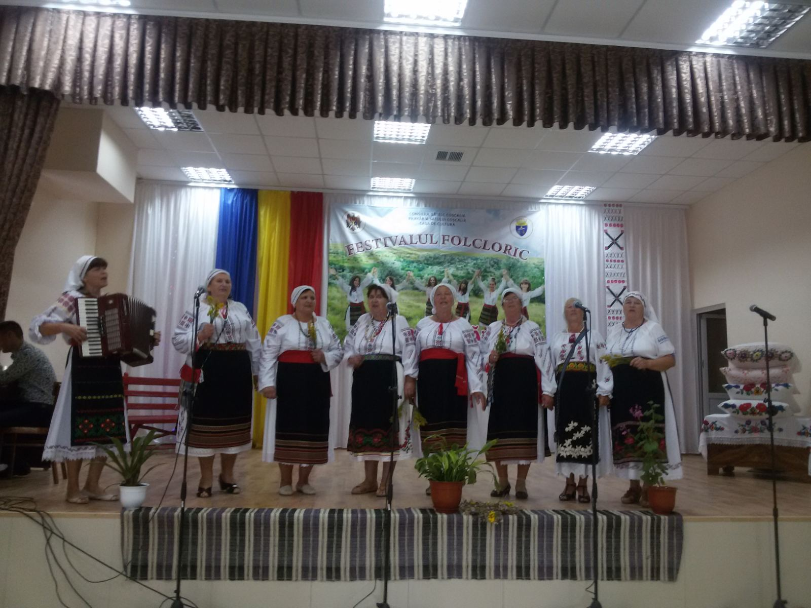
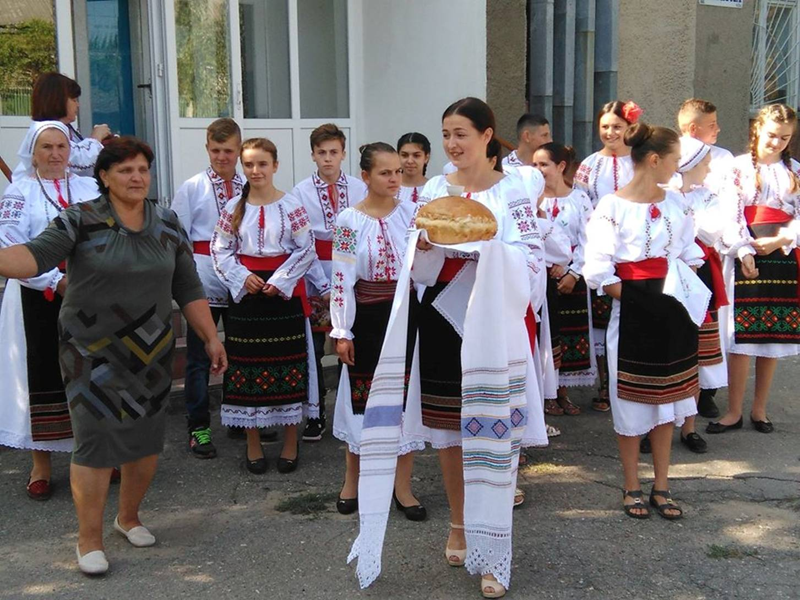

Ansamblul folcloric "Datina"
Conducător : Cucovici Antonina
Acompaniment : Ceban Larisa
Colectivul ansamblului folcloric ,,DATINA” a fost înființat în primăvara anului 2017, în cadrul implementării proiectului ,,Comunicarea prin tradiții populare...”. Ansamblul folcloric ,,DATINA” a fost menționat cu diplome de merit pentru participare activă în promovarea tradițiilor naționale la festivalurile locale și raionale, precum:

